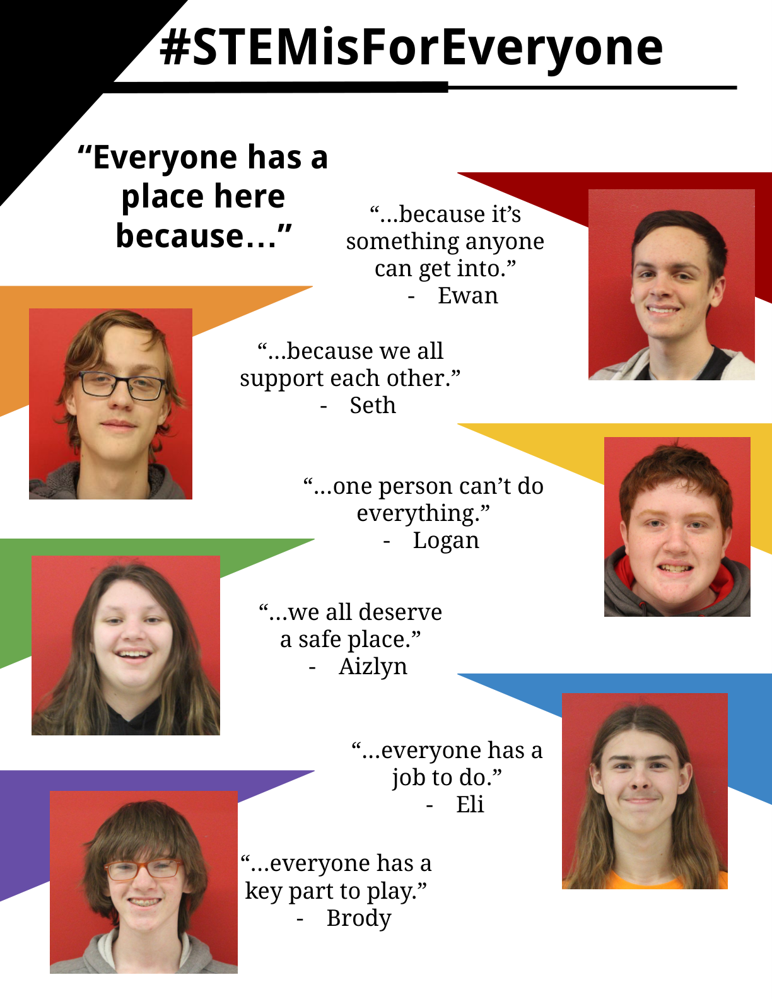
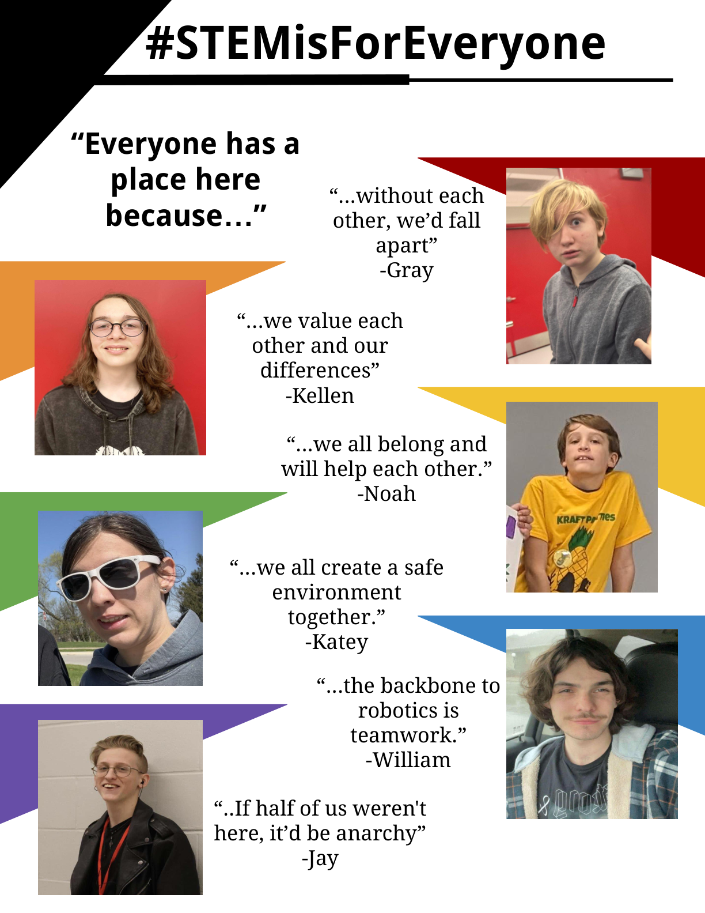
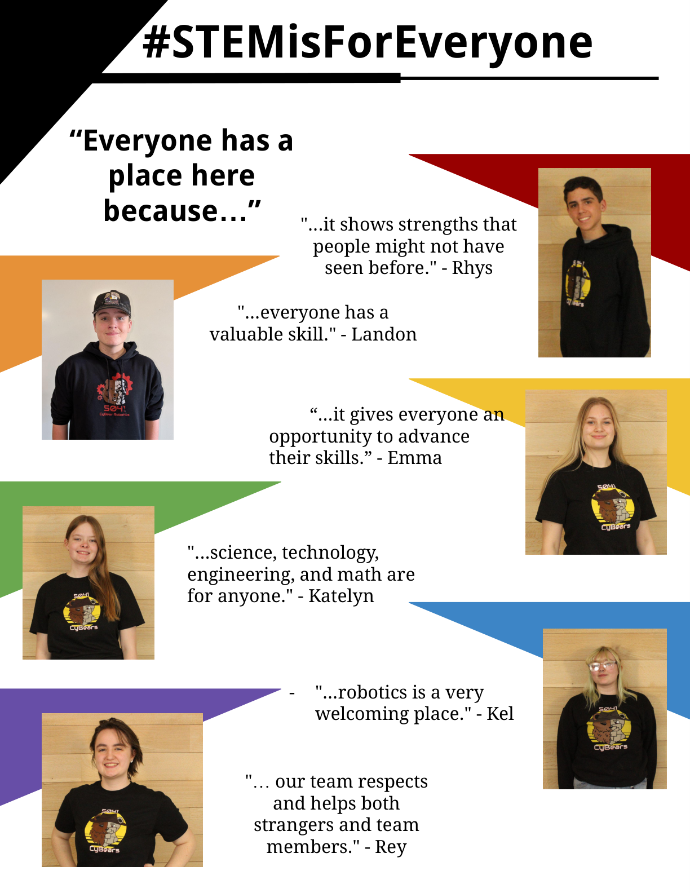

5041 CyBear Robotics Training Module
This is not just a slogan. It means our shop, meetings, pit, travel, outreach, Discord, drive team, awards work, and mentor conversations should help people belong.
Interest and hard work should matter more than prior experience.
Students should be allowed to learn, practice, fail, and improve.
A welcoming team is built by everyone, not only mentors or leaders.
Grow every season by learning technical and professional skills while staying open to students who want to join.
Create an inclusive space where all students can engage with STEM and enjoy learning for its own sake.
Practice FIRST values, Gracious Professionalism, Coopertition, inclusion, and STEM for all.
Key idea: We are not only building robots. We are building people, trust, and future teammates.



When people feel safe, they ask better questions, take useful risks, and stay involved longer.
Explain acronyms, tools, roles, and why the team does things a certain way.
Invite ideas without forcing someone to perform in front of the whole group.
Give real jobs with support instead of only cleanup or watching.
Ask them to teach, document, and make room instead of taking over.
Everyone starts somewhere. Mistakes are expected in design, coding, wiring, awards, and outreach.
Fix the part, fix the process, and fix the relationship if someone was embarrassed or dismissed.
Turn lessons learned into checklists, CAD notes, code comments, pit notes, and mentor reminders.
Stop escalating. Keep your voice controlled and focus on the issue, not the person.
Ask what happened, what is needed, and what decision has to be made next.
If someone feels unsafe, threatened, excluded, or targeted, bring in a mentor immediately.
5041 expectation: Students should maintain a professional attitude and find diplomatic solutions.
Your group is wiring a practice board. A new student has been standing nearby for 20 minutes, but nobody has asked them to help. What is the best response?
Choose the strongest response.
Each question is on its own slide.
Answer all 20 questions, then grade the quiz. Score at least 18 out of 20 to unlock the completion certificate.
Please enter your name before starting the quiz.
This name will appear on your completion certificate.
What is 5041’s team motto?
Which action best shows inclusion?
Why should mistakes be treated carefully?
What should you do when a quiet student has not spoken during a design discussion?
Which statement is most helpful to a beginner?
If someone makes a joke that targets identity, ability, or background, the best response is to:
What does Gracious Professionalism ask teams to blend?
What is the safest first step when a conflict starts getting personal?
Which role deserves respect on the team?
What should experienced members do with their knowledge?
When should serious harassment, bullying, or safety concerns involve a mentor?
What is a good way to include younger members?
Which behavior risks making the team feel unsafe?
What does “access to real work” mean?
If you do not know how to pronounce someone’s name, you should:
What should the team do after a tense disagreement?
Which choice best supports belonging during meetings?
What should you do if someone says they feel unsafe on the team?
Which team habit helps future members?
What is the best summary of this module?
You need at least 18 out of 20 to unlock the completion certificate.
Not submitted.
After passing, advance to the final completion certificate.
5041 CyBear Robotics
Presented to
for successfully completing the
Complete after passing the required quiz.
Everyone has a place here.